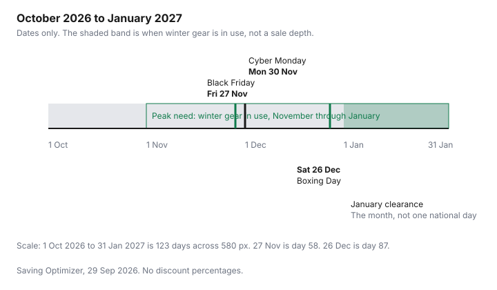

Clothing · Canada
Black Friday vs Boxing Day for Clothing in Canada: Which Sale Wins for Coats, Boots and Basics
For winter coats and boots in Canada, Black Friday (27 November 2026) wins if you need the item now and your size is on the rack. Boxing Day (26 December) may bring a lower ticket but a thinner size run. The winter coat question is a calendar question and a size question. In 2026, Black Friday is Friday 27 November, Cyber Monday is Monday 30 November, and Boxing Day is Saturday 26 December. Waiting can mean a lower ticket. It can also mean your size is gone while you are already cold. This page is clothing. Appliances on the same weekends are on the appliance timing guide. No typical discount percent is stated here, because none was taken from a dated retailer page.
Key takeaways
- Black Friday 2026 is Friday 27 November. Cyber Monday is Monday 30 November. Boxing Day is Saturday 26 December. January clearance is the month, not one national date.
- Buy the winter coat in November if you need it for the cold you already have and your size is on the rack. Wait only if you can wear what you own and you accept a thinner size run.
- A "was" price is checked against the Competition Bureau's volume test and time test, in guidelines dated 16 October 2009. The Bureau's page says those guidelines are under review after Competition Act changes.
- "Up to" is a ceiling. A doorbuster is a small count. Neither phrase is the price of the coat in your size.
- Price adjustments, gift cards, cash back and points stack only when each program's own exclusions allow it. Sale clothing follows the return rules printed for that item.
Dates for 2026: 27 November, Cyber Monday 30 November, Boxing Day 26 December
These are calendar dates, not article dates, and not a claim that every banner opens a sale on the morning of each one. Friday 27 November 2026 is Black Friday.
Monday 30 November 2026 is Cyber Monday. Saturday 26 December 2026 is Boxing Day. January 2027 is the usual end-of-season window for winter clothes that did not sell, and this page does not assign that clearance to a single morning. The month-by-month view is on the clothing calendar.
What to check is the same on each date, and it is not a percent off. Does the retailer's price-adjustment policy exclude the event? Is the holiday return window longer, shorter, or silent? Does the tag say final sale? The Prime Big Deal Days guide is an Amazon.ca event, separate from these three dates. Canadian Tire's cycles are one banner. Do not copy either page onto a coat department that has not published the same event.
| Date | What it is | What to check |
|---|---|---|
| Friday 27 November 2026 | Black Friday | Price-adjustment exclusions, whether your size is a full run, and any final-sale line |
| Monday 30 November 2026 | Cyber Monday | The same checks, plus who pays return shipping if the size is wrong |
| Saturday 26 December 2026 | Boxing Day | Whether a holiday return window is actually published for 2026, final sale, and missing sizes |
| January 2027 | End-of-season clearance, with no single national start date on this page | Size gaps. A thinner rack is the cost of waiting, even when the ticket is lower. |

What usually gets discounted when: outerwear, boots, basics, kids' clothes
Season is the reason a category moves, not a percent this page is willing to invent. Outerwear and boots are in demand from the first cold weeks.
The rack is fullest before everyone needs them, and thinnest after Christmas, when the unsold sizes are what remain. Basics and some work clothes are less tied to a single cold week, so waiting is less likely to strand you. Kids' clothes have a second pressure: the child grows while you wait, and a sale size can be the size they have already left.
Activewear is rarely an emergency in the way a coat is, unless a program starts on a date. None of that is a forecast of how many dollars come off. It is a reason to decide category by category. The decision table is below. The coat guide is where warmth and cost per wear sit once you know which weekend you are shopping.
'Doorbuster' vs 'up to' claims and how to check the ordinary price
A doorbuster is a count. If the sign does not say how many pieces, assume the coat in your size may not be the piece.
"Up to" names a ceiling. The coat you can try on can be anywhere under that ceiling, including a few dollars off. Write down the price of the actual garment. Photograph the ordinary-price claim beside it.
The Competition Bureau's ordinary-price guidelines are dated 16 October 2009. Checked 29 Sep 2026, the page still publishes them, and it says the Bureau is reviewing the guidelines after changes to the Competition Act. The two tests are a volume test and a time test. The guidelines say the volume test is met if more than 50 percent of sales are at or above the reference price, generally over the twelve months before the claim, shorter if the product is seasonal. The time test is met if the product was offered in good faith at or above that price for more than 50 percent of the time, generally six months, again shorter for seasonal goods. A supplier's own price and "suppliers generally" are different comparisons. A clearance can fail both tests and still be fair if it is marked as clearance and the original price was offered in good faith. The guidelines use a hypothetical $100 regular price and $50 sale price as an illustration. That pair is the Bureau's example, not a clothing price. This page does not quote the penalty amounts in those guidelines as current figures, because the page itself says the guidelines are under review.
Stacking: price adjustments, gift cards, cash back and loyalty points
Four things can sit on one purchase, and each one can refuse the stack. A price adjustment returns the difference after you paid, usually when the same retailer cuts its own price, inside a window.
The price-adjustment guide shows how a few household banners write that window. Read the clothing banner's own page. Do not assume a Black Friday price is eligible, and do not assume Boxing Day will be honoured on a November receipt.
A discounted retailer gift card is an offer type. The discount is real only on the card's own terms, and some cards exclude a later price adjustment or a sale event. A cash-back portal is an offer type. It tracks a click. It does not rewrite the ticket, and a portal exclusion for gift cards or for sale items is common enough that you should read the offer before you count both. Loyalty points follow the program's earn rules on discounted merchandise. Add only the pieces the written terms allow. This page has no stack value.
Returns and exchanges on sale clothing, including holiday return windows
Sale clothing is where return rules shrink. Final sale means what the tag says.
A holiday window, if the store publishes one, is a date range for that season, not a rule you can reuse from a previous Boxing Day. This guide does not cite a 2026 holiday window that applies to clothing generally. If a page still shows last winter's dates, treat them as last winter. The return guide is the overview, including the point that Canada does not give a general change-of-mind right.
Before you buy, photograph the return line, the final-sale line, and the price. If you are buying a gift, ask whether a gift receipt exchanges or refunds. Online orders add return postage. A coat that does not fit is not a saving if the postage is yours and the item was final sale.
A simple buy-now vs wait decision table
Use the row for the thing in your hand. "Buy in November" means Black Friday week, not a claim that the price is the lowest of the year. "Wait" means you can live without it until Boxing Day or January. The risk column is stock and size, not a made-up percent.
| Category | Buy in November if | Wait for Boxing Day if | Risk of waiting |
|---|---|---|---|
| Winter coats | You need it for cold that is already here, and your size is in stock | You can wear a coat you own through December | Your size sells through. January may be leftovers, not the coat you tried on. |
| Boots | You have walked in the pair and the fit works with winter socks | You have a pair that is still waterproof | Fit is harder to replace than a basic shirt. Clearance sizes run odd. |
| Basics | You are replacing something you wear this week for work | It is a spare, not the only one | Lower than for coats. Colour and size can still disappear. |
| Kids' clothes | The current size is what they will wear this winter, including a snowsuit they need now | You already have a safe, warm set that fits | They grow out of the sale size while you wait, or the size sells out. |
| Activewear | A season or a class starts before Boxing Day | Nothing on the calendar forces the date | Mostly selection, not weather. |
| Work clothes | A dress code or a worn-out piece means you need it this month | It is an extra, not the only compliant outfit | A missing size is a work problem, not only a sale problem. |
Sources & date stamps
- Competition Bureau, Ordinary Price Claims, enforcement guidelines dated 16 October 2009, page checked 29 Sep 2026. Volume test: more than 50 percent of sales at or above the reference price, generally twelve months, shorter for seasonal goods. Time test: offered in good faith more than 50 percent of the time, generally six months, shorter for seasonal goods. The page says the guidelines are being reviewed after Competition Act amendments. The $100 and $50 pair in the guidelines is the Bureau's hypothetical.
- Calendar: Friday 27 November 2026, Monday 30 November 2026, Saturday 26 December 2026.
Frequently asked questions
Are Black Friday clothing deals better than Boxing Day in Canada?
Neither weekend is better for every category. Black Friday in 2026 is Friday 27 November, and Boxing Day is Saturday 26 December. A coat you need in November is a different decision from a basic you can wear next month. Judge the ordinary price, the size still in stock, and the return rules.
Should I wait until Boxing Day to buy a winter coat?
Wait only if you can wear what you already own through December and you can accept a broken size run. Buying in November keeps the size selection while the coat is something you may already need. Boxing Day can be the clearance of what is left, which is not the same as a deeper price on your size. There is no national percent off to wait for on this page.
Do price adjustments apply to Black Friday prices?
Sometimes, and often they do not. A price adjustment is the retailer's own later drop, inside the window and the exclusions on that retailer's page. Some pages exclude Black Friday prices or shorten the window. Read the policy before you buy on the assumption you can claim the Boxing Day price later. The household guide collects a few banners. It is not a clothing-wide rule.
How can I tell if a 'was' price is real?
The Competition Bureau's ordinary-price guidelines, dated 16 October 2009, use two tests: a substantial volume sold at or above the reference price, or a good-faith offer for a substantial period. The published reading is more than 50 percent of sales, generally over twelve months, or more than 50 percent of the time, generally six months, and either period can be shorter for seasonal goods. The same page says the guidelines are being reviewed after Competition Act changes. A crossed-out price is not proof by itself.
Can I return sale clothing bought on Boxing Day?
Only on the terms that retailer publishes for that item. Final sale, opened swimwear, and a shortened holiday window are store rules, not a national statute this page can recite as a clothing right. Read the sign and the receipt before you buy. The return-policy guide is the place for the general Canadian position that a change of mind is not an automatic legal right.
Researched and drafted with AI assistance and fact-checked against official Canadian sources. How we create content.
Disclosure: Cash-back portal offers and discounted retailer gift cards are offer types. Saving Optimizer may earn a commission if a partner link is added later. No partnership is claimed. Neither offer type changes an ordinary price or a return window. Education only.